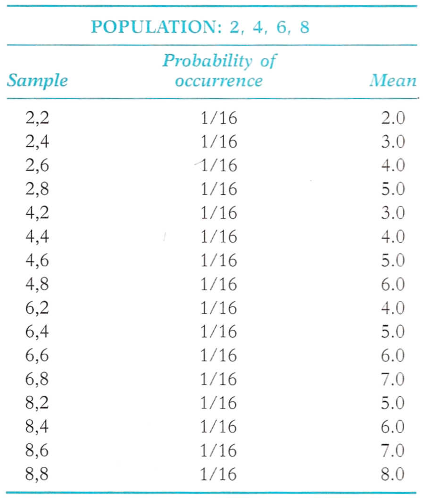
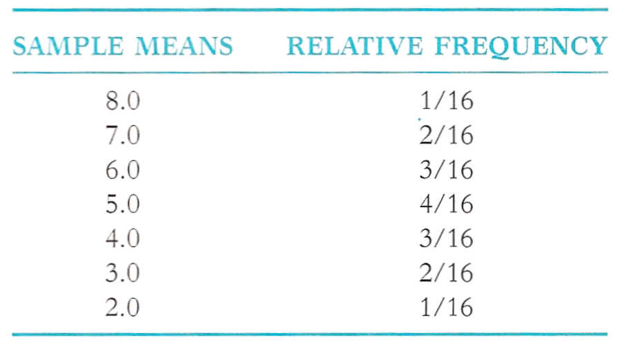
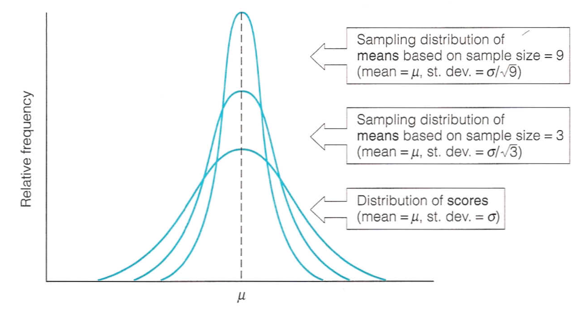
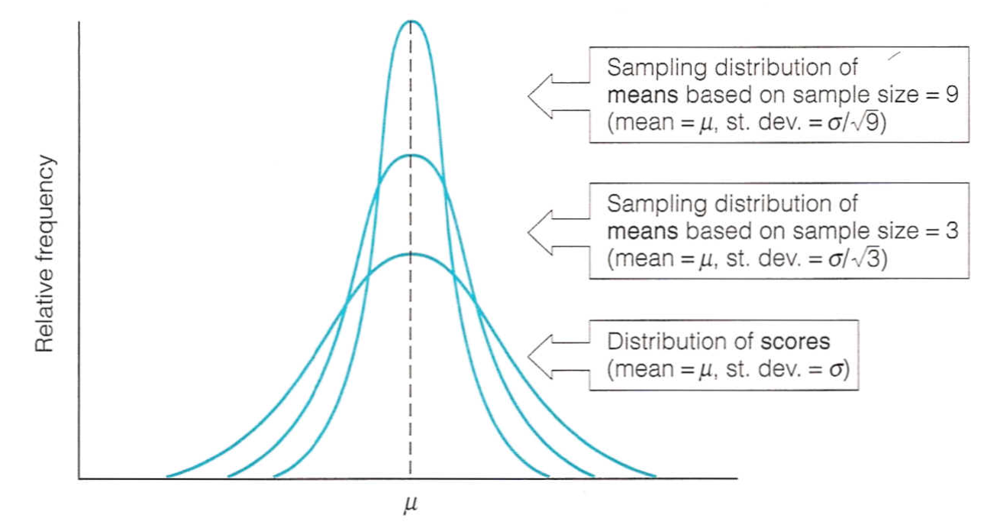

PSQF 4143: Section 8

Brandon LeBeau
| Characteristic | Parameter |
|---|---|
| Mean | \(\mu\) |
| Standard Dev. | \(\sigma\) |
| Correlation | \(\rho\) |
| Median | \(\epsilon\) |
| Proportion | \(\pi\) |

Purpose: > "to ascertain whether a group of students could be effectively motivated, through individual and group guidance activities, to achieve significantly higher results on the ITED than another group of students who were not afforded the same guidance services."
Subjects: > "270 ninth grade students from a midwestern community of mixed social and ethnic background. One-half the students were randomly assigned to an experimental group and one-half to a control group"
Conclusions: > "the results of the standardized achievement testing were related to the motivational and teaching activities that were carried out prior to the testing" > "improved test results are obtainable when students become personally involved in, motivated by, and interested in the testing program" > "All schools are interested in improving their . . . standardized test [scores], but more important, they must be interested in the individual student and his development"
Purpose: > "Are there individual differences in the quality of maternal care given kids and, if there are, do these lead to differences in social roles?"
Subjects: > "a small group of inbred Toggenburg goats "
Conclusions: > "For goats, and other social species, it makes sense to diversify these capabilities as much as possible -- the reverse of the all-apples-in-one-basket strategy"


 


 
